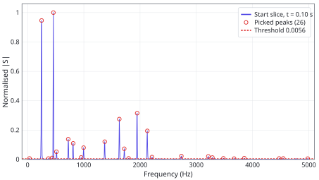
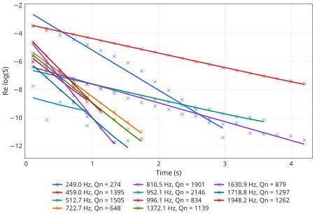
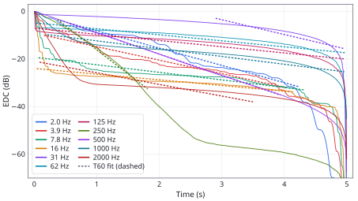

Damping charts (1 of 2)
Placeholder body text in 10 pt Times-style type, for scale. Record: 6modes done.dvma, set “2”, response channel, the app’s default fits (STFT 2048, automatic start and threshold; octave bands).


Damping charts (2 of 2)
Placeholder body text in 10 pt Times-style type, for scale. Record: 6modes done.dvma, set “2”, response channel, the app’s default fits (STFT 2048, automatic start and threshold; octave bands).
